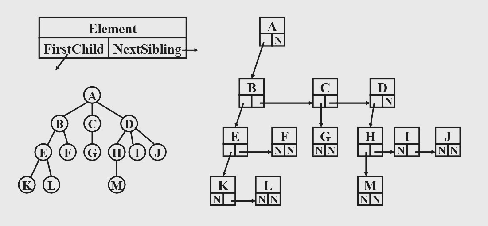
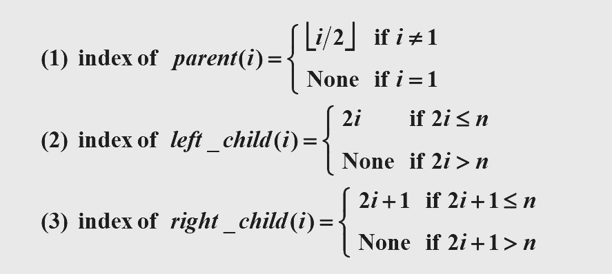
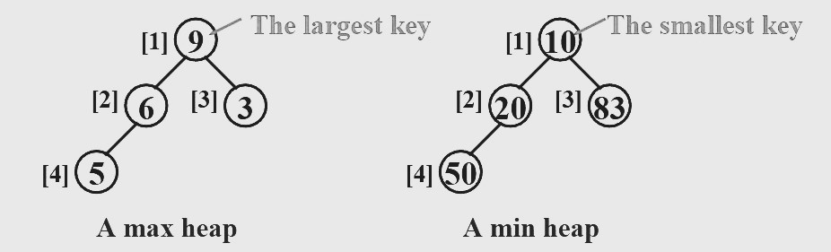

Chapter1 Basic Data Structures
1.1 Algorithm Analysis
$$T(N)=O(f(N))$$
There are positive constants $c$ and $n_0$ such that $T(N)\leqslant c·f(N)$ for all $N\geqslant n_0$.
$$T(N)=\Omega(f(N))$$
There are positive constants $c$ and $n_0$ such that $T(N)\geqslant c·f(N)$ for all $N\geqslant n_0$.
$$T(N)=\Theta(f(N))$$
If and only if $T(N)=O(f(N))$ and $T(N)=\Omega(f(N))$.
$$T(N)=o(f(N))$$
If and only if $T(N)=O(f(N))$ and $T(N)\neq\Theta(f(N))$.
Rules:
-
$T_1(N)+T_2(N)=\max(O(f(N)),O(g(N)))$
-
$T_1(N)*T_2(N)=O(f(N)*g(N))$
-
If $T(N)$ is a polynomial(多项式) of degree $k$, then $T(N)=\Theta(N^k)$.
-
$\log^k N=O(N)$ for any constant $k$.
1.2 Lists, Stacks and Queues
Abstract data type（ADT）:
由 object 和 operation 组成，且二者与其具体表示形式无关。
List:
重要操作：finding, inserting, deleting
cursor implementation 静态链表，即用数组的形式实现一个链表。
Stack:
重要操作：push, pop, top
Queue:
重要操作：enqueue, dequeue, front
1.3 Binary Tree
Basic
-
edge（边）
connection between two nodes -
degree of a node（节点的度数）
number of the subtrees of the node -
degree of a tree（树的度数）
maximum of degree（node）of the tree -
path from $n_1$ to $n_k$（路径）
a (unique) sequence of nodes $n_1,n_2,···,n_k$ such that $n_i$ is the parent of $n_{i+1}$ for $1\leqslant i < k$ -
length of path（路径长度）
number of edges on the path -
depth of $n_i$（深度）
length of the unique path from the root to $n_i$（根的深度为 0 ） -
height of $n_i$（高度）
length of the longest path from $n_i$ to a leaf（叶子的高度为 0 ） -
height (depth) of a tree（树的高度/深度）
height（root）= depth（deepest leaf） -
ancestors of a node（祖先）
all the nodes along the path from the node up to the root -
descendants of a node（后代）
all the nodes in its subtrees
Some Special Categories:
-
Skewed Binary Tree
Every node has either left subtree or right subtree. -
Complete Binary Tree
All the nodes correspond to the nodes numbered from 1 to n in the perfect binary tree. -
Perfect Binary Tree
All the leaf nodes are at the same depth.
Properties of Binary Trees:
-
The maximum number of nodes in a binary tree of depth $k$ is $2^k-1$, $k\geqslant 1$.
-
For any nonempty binary tree, $n_0=n_2+1$ where $n_0$ is the number of leaf nodes and $n_2$ the number of nodes of degree 2.
Representation
Firstchild-Nextsibling Representation:

Note
The representation is not unique since the children in a tree can be of any order.
Threaded Binary Tree:
- 如果节点的左子树为空，则将其左指针指向中序遍历的前一个节点
- 如果节点的右子树为空，则将其右指针指向中序遍历的后一个节点
- 对于中序遍历的第一个节点和最后一个节点，其分别的左指针和右指针指向一个 head node
Tree Traversals
Preorder Traversal:
Inorder Traversal:
Similar to preorder traversal, but has an iterative program.
先一直往左走并不断入栈，等到走到底后，先出栈，再往右走，然后重复过程。
Postorder Traversal:
Similar
Levelorder Traversal:
每当遍历到一个节点时，该节点出队的同时将其子节点入队。
1.4 Binary Search Tree
Definition of Binary Search Tree
A binary search tree is a binary tree. It may be empty. If it is not empty, it satisfies the following properties:
- Every node has a key which is an integer, and the keys are distinct.
- The keys in a nonempty left subtree must be smaller than the key in the root of the subtree.
- The keys in a nonempty right subtree must be larger than the key in the root of the subtree.
- The left and right subtrees are also binary search trees.
Operations
$$T=O(d)$$
其中$d$为树高。
Find:
Insert:
Delete:
- 若删除叶子节点，则直接将其 parent 置为 null
- 若删除度数为 1 的节点，则用其子节点来替换
- 若删除度数为 2 的节点，则用左子树中最大的元素或者右子树中最小的元素来替换，然后删除用于替换的节点，此时又回到第一、二种情况
1.5 Priority Queue
Definition of Priority Queue
A finite ordered list with zero or more elements, implemented by a linked list.
Properties of Complete Binary Tree:
下标从 1 开始。

Min Heap:
A complete binary tree in which the key value in each node is no larger than the key values in its children (if any).（要求每个节点都比它的孩子小）
Note
Analogously, we can declare a max heap by changing the heap order property.

Operations
Insert:
$$T(N)=O(\log N)$$
DeleteMin:
$$T(N)=O(\log N)$$
Note
Finding any key except the minimum one will have to take a linear scan through the entire heap.
1.6 Disjoint Set
Definition of Disjoint Set
A forest with a number of trees, each tree having its own structure.
Example
Given $S=\{1,2,3,4,5,6,7,8,9,10,11,12\}$
$12\equiv4, 3\equiv1, 6\equiv10, 8\equiv9, 7\equiv4, 6\equiv8, 3\equiv5, 2\equiv11, 11\equiv12$
The equivalence classes are $\{2,4,7,11,12\},\{1,3,5\},\{6,8,9,10\}$
Operations
Union-by-Size:
Union-by-Height:
Find(Path-Compression):